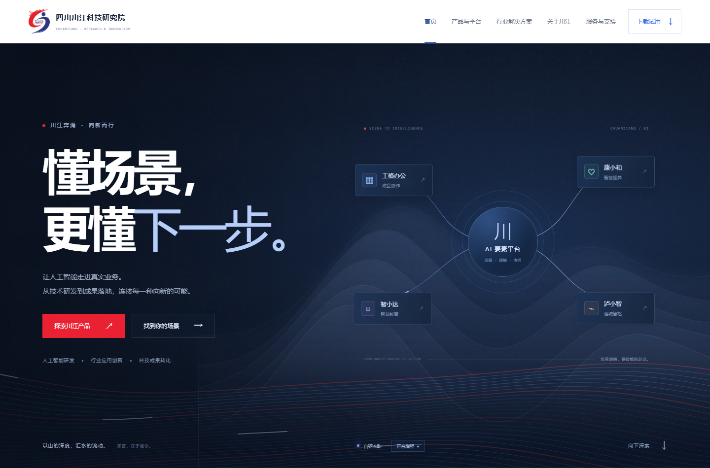
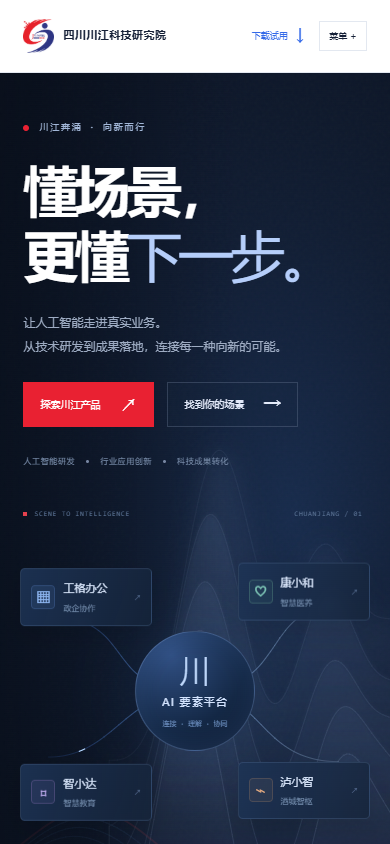
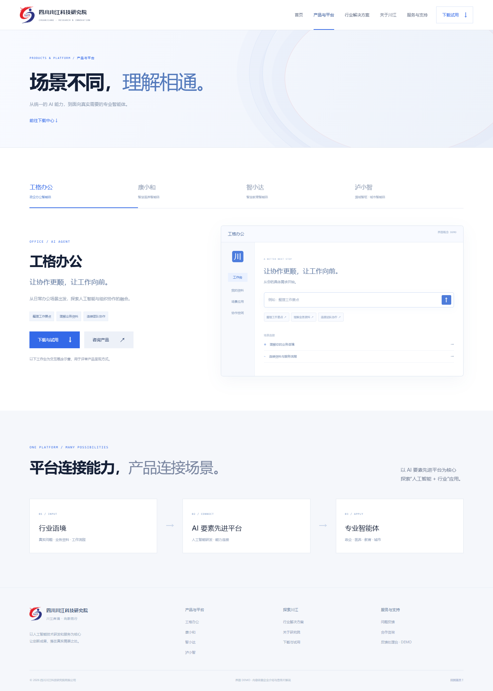
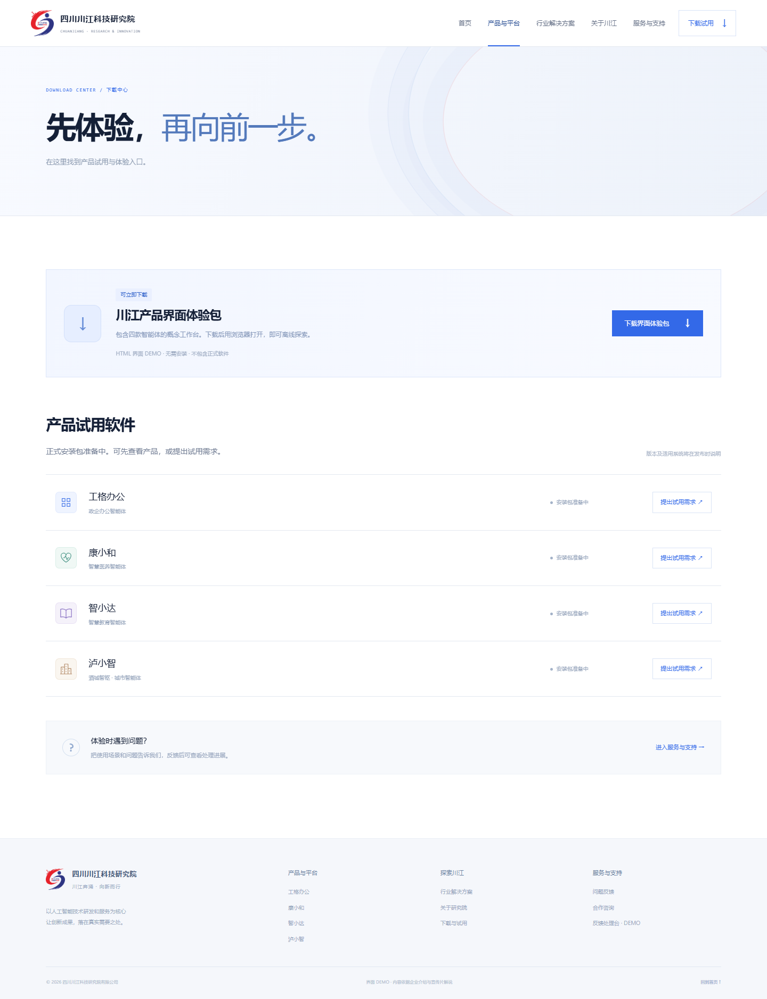
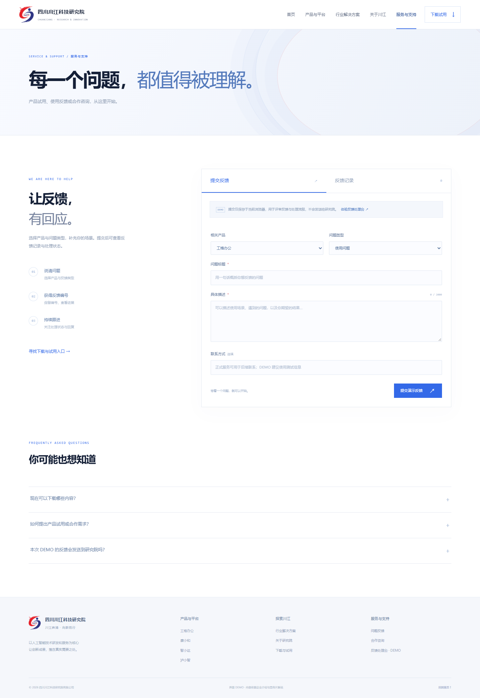
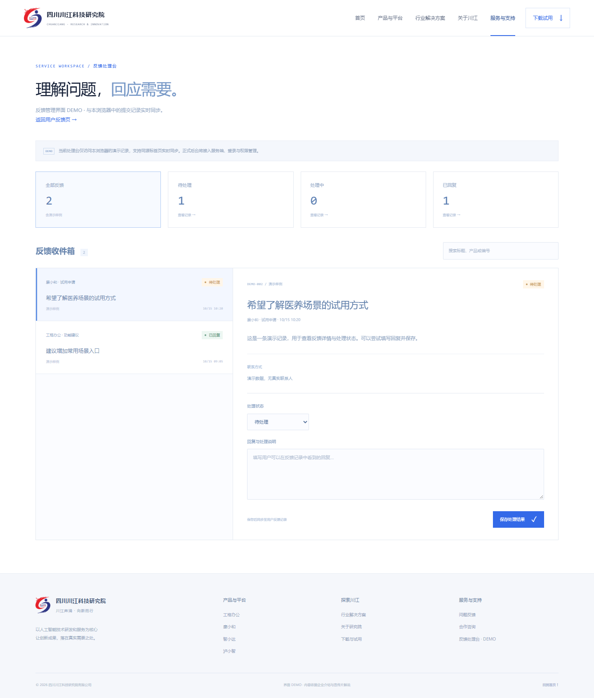

四川川江科技研究院 · 界面 DEMO V2
懂场景，更懂下一步。
以“高山流水觅知音”为创意入口，把传统意象升华为“理解”的产品能力：网站先理解访客所处的业务语境，再把产品、场景、下载和反馈连成一条可行动的路径。
“知音”从听见声音，升华为理解需要。
访客是伯牙，网站是子期。设计不把典故当作一张古风背景图，而是把“懂你”变成界面行为：理解行业、匹配产品、给出下一步，并让反馈有回应。
高山提供深度与稳定，流水提供连接与变化；科技把两者变成可持续的场景理解能力。
层叠墨色与留白，表达研究能力、长期积累和品牌定力。
连续线流表达信息、业务与产品之间的流动关系。
选择行业或意图后，内容、产品入口与状态随之响应。
蓝色系统、数据结构和交互路径把传统意象导向可用产品。
传统是灵感，科技是落点。
首屏用宽幅墨色山势建立品牌气场，水不再是粒子云，而是 27 组持续移动的线流。动画由时间自驱，鼠标与滚动改变节奏，麦克风只是可选增强，因此无声时也不会“停住”。
连续水线
线条有方向、有速度、有层次，用户能直接感受到水在流动。减少装饰性粒子，把动效服务于“连接”概念。
抽象墨山
用多层渐变和半透明山脊取代写实山水，保留东方留白，又与深色科技界面协调。
统一系统
首页深墨蓝建立品牌记忆，内页使用相同的蓝色线流、红色行动色与间距体系，保证体验连续。
从理解，到行动，每一步都有入口。
参考钉钉官网“品牌主张 → 产品 → 行业场景 → 下载/支持”的信息节奏，结合川江研究院的业务结构，组织成七个可直接试看和评审的路由。
首页
品牌主张、AI 要素平台、四款产品、行业选择与创新生态。
产品与平台
工格办公、康小和、智小达、泸小智与概念工作台。
行业解决方案
政企、医养、教育、数字文化四个场景入口。
下载中心
先下载可运行的界面体验包，正式安装包标注“准备中”。
服务与反馈
提交问题、查看编号、处理台回复，形成完整闭环 DEMO。
把研究院讲清楚，再把产品讲明白。
内容依据企业介绍文档和宣传片解说整理：2021 年 10 月正式运营、研究机构 + 天使投资 + 创新平台 + 产业孵化、40 余项知识产权、30 余名博士专家、3 家孵化企业，以及 AI 要素先进平台、政企服务、智慧医养、智慧教育、数字文化等方向。首页主张和产品场景文案为本轮创作，正式发布前由业务确认。




产品与业务，在同一个视觉系统里。
首页里的 AI 平台与四款产品是可点击入口。内页继续使用相同的字体、科技蓝、线流与工作台结构；产品介绍、行业场景和试用入口相互连接，让品牌主张落到具体业务。




让“懂你”，成为持续的回应。
服务支持包含问题类型、产品选择、反馈编号与进展。处理台包含状态分类、搜索、详情与回复。提交测试反馈后，进入处理台保存回复，再回到“反馈记录”即可查看更新。




一份可离线打开的客户试看包。
解压后，用 Edge 或 Chrome 双击“双击打开试看.html”。无需启动服务，导航、山水动效、产品选择、体验包下载以及反馈回复均可操作。设计说明提供 HTML 与 PDF 两种格式，截图可用于讨论或转发。
建议客户重点评审
- 品牌气质：是否体现“川江奔涌，向新而行”。
- 视觉方向：传统意象和科技表达的比例，首页与内页是否协调。
- 业务表达：四款产品、四类行业与研究院创新生态是否清楚。
- 体验路径：下载、试用申请、反馈和处理回复是否顺畅。
本轮已完成
七个页面、响应式布局、持续动效、产品与行业切换、实际界面包下载、反馈处理闭环。
后续补充
正式软件与适用系统、产品功能清单、宣传片视频、联系方式、上线所需企业信息。
上线阶段
接入实际后台、账号权限、反馈通知及软件下载服务，并验证正式业务流程。
素材依据：2026.1 川江科技研究院介绍、原始 LOGO 与宣传片解说。钉钉仅作为内容层级参考，未使用其品牌资产。企业事实与本轮设计文案在说明中分别标注。